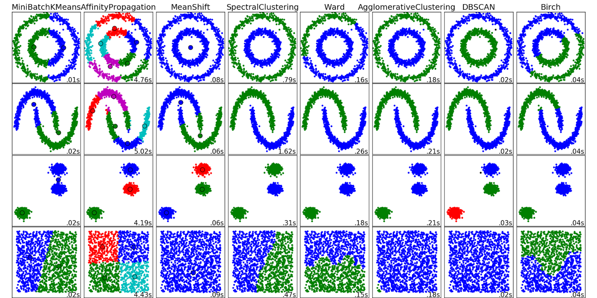
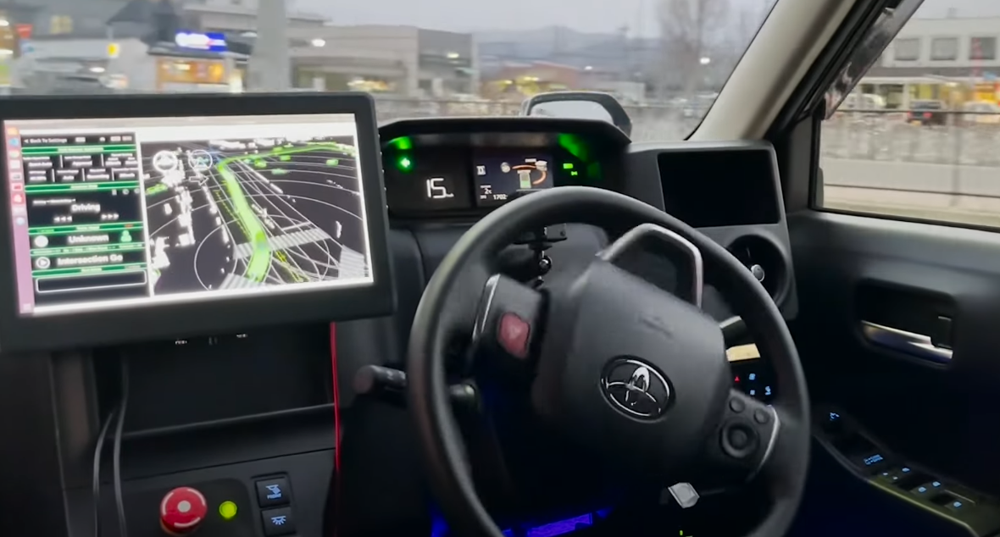
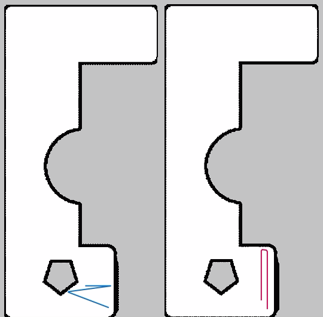

LIDAR mérésekből megállapítani a formgalmi sávokat real-time, 20 Hz.

- Szükséges elősimeretek: programozási ismeretek
- A munka során meg kell ismerni: C++ / Python, ROS / ROS2, GitHub
- Egyéb fontos tudnivaló: -
A címekre kattintva további információk jelennek meg.
A járművet körülvevő objektumok mozgásának prediktálása, becslése (esztimálása) az önvezető (autonóm) járművek fontos alfeladata. Jelenlegi tudásunk szerint ezt a feladatot kameraképből vagy LIDAR pontfelhőből neurális hálók segítségével lehet a leghatékonyabban megoldani. Erre megoldás lehet például az időbeliséget reprezentáló RNN (recurrent neural network) alkalmazása.
A munka nem előzménynélküli, saját részmegoldások és egyéb források is elérhetőek:
Fontos, hogy real-time (20Hz) és ROS node megoldás fogadható csak el.
A vezethető útfelület észlelése mind az vezetéstámogatás, mind az önvezető járművek fontos alfeladata. Kameraképből a vezethető útfelület meghatározása mai tudásunk szerint leghatékonyabban neurális hálók segítségével lehet. A rendszer megköveteli az úthatár azonosítását és a környező akadályok, például járművek, gyalogosok, védőkorlátok és épületek felderítését. A fejlesztendő rendszer által észlelt eredmény felhasználható ütközések elkerülésére és az útvonal tervezésére. A feladat része, hogy ROS sensor_msgs/Image típusban érkező képből visualization_msgs/MarkerArray típusú üzenetben jelenítse meg az út szélét, átkonvertálva azt "bird eye view"-ba. A marker az út szélét jelző félpoligonokból álljon, lehetőleg egyszerűsített módon, kevés pontszámból álljon. A fejlesztendő algoritmussal szemben támasztott további követelmény a 20Hz-es feldolgozási idő. Mentett log adatok a fejlesztéshez publikusan elérhetőek (github.com/szenergy/szenergy-public-resources ), de kérésre újakat is tudunk rögzíteni.
LIDAR mérésekből megállapítani a formgalmi sávokat real-time, 20 Hz.
en.wikipedia.org/wiki/Cluster_analysis


Elvállalta: Cs. Cintia
Az egyetem tulajdonában lévő robot különböző fejelsztési feladatai.

Elvállalta: I. B.
RVIZ/RVIZ2 plugin létrehozása Linux/Windows 11

Elvállalta: F. R.
A feladat során a járműmodell egy szimulált környezetben különböző szenzorokra támaszkodva, a pillanatnyi helyzet és szenzoradatok alapján, feltérképezi a környezetét, majd az üzemmódjának megfelelően viselkedik. A fő funkció az autonóm üzemmód, melyben a jármű számára ismeretlen, teljesen új környezetben tud haladni, úgy, hogy nem tér le az útról és az azon található akadályokkal való találkozást elkerüli. Másodlagos feladat, hogy autonóm üzemmódba a jármű a legrövidebb idő alatt a legtöbb utat tegye meg, mint egy klasszikus versenyen. Emellett, a modern, az autonóm járművek képességeit próbára tevő, Shell Eco-marathon nevű verseny, új, autonóm járművekre kiírt feladatai közül képes legyen néhányat megoldani
Elvállalta: T. Tibor
A feladat magában foglalja coverage path planning (CPP) algoritmusok megvalósítását és elemző összevetését, valamint a vonatkozó szakirodalom áttekintését is. A CPP algoritmusok térképek optimális bejárásának kérdéseivel foglalkoznak. A megvalósítás nyelve lehet python gay C++. Legalább két CPP algoritmus (pl. boustrophedon cellular decomposition coverage, iterative structured orientation coverage) megvalósítása a cél. Az algoritmusok occupancy grid map (foglatsági rács) reprezentációjú térképeken működjenek. A megvalósítás után az elemző összevetés térjen ki a megvalósított algoritmusok teljesítményére, számítási igényére, illetve nyelvekkel kapcsolatos megvalósíthatósági kérdésekre is. Amennyiben a munka során feltár lehetőségeket, tegyen javaslatot az algoritmusok optimalizációjával kapcsolatban is. A forráskódot publikus repository-n megosztani. Példa a lehetséges eredményre, kimenetre (ez MATLAB-ban készült):

Elvállalta: Sz. Dávid
Térképes adatvizualizációs technológiák Magyarországról pl:

Kiinduláshoz további példa atlo.team/telepulesnevek
Elvállalta: K. Kíra
LIDAR mérésekből az egyetem campusának 3D mesh létrehozás, openstreetmap-ra feltöltése (ez jelenleg is létezik, de elég pontatlannak tűnik, viszont vannak LIDAR méréseink, amivel ezt meg lehetne oldani) osmbuildings.org Első lépés itt a 3D point cloud létrehozása lenne. Ebben van egy kis tapasztalatunk, tudok segíteni, de internetről összeszedhető a tudás. Amit mi készítettünk egy zalai épületről az pl így néz ki: Második lépés a pontfelhőből valamilyen mesh készítése akár "kézzel" akár automatikusan pl így: pointclouds.org Aztán jó lenne egyszerűsíteni ezt a mesht, ha olyan bonyolutra sikerült, mint a fenti linken, primitívekkel (pl tégletest, henger) Ezután megismerni az OSM API-t Pontosítani a jelenlegi ábrázolást és feltölteni